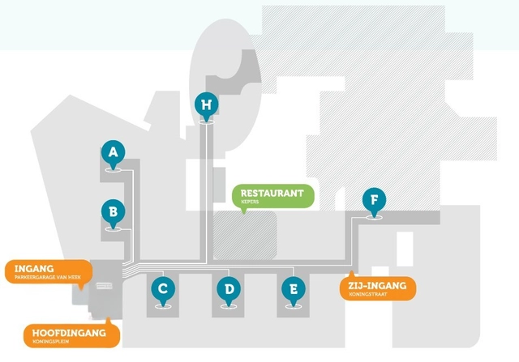
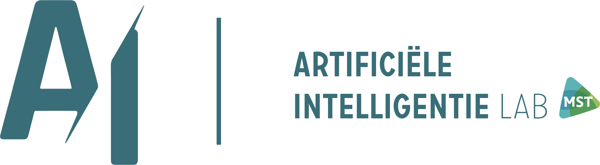
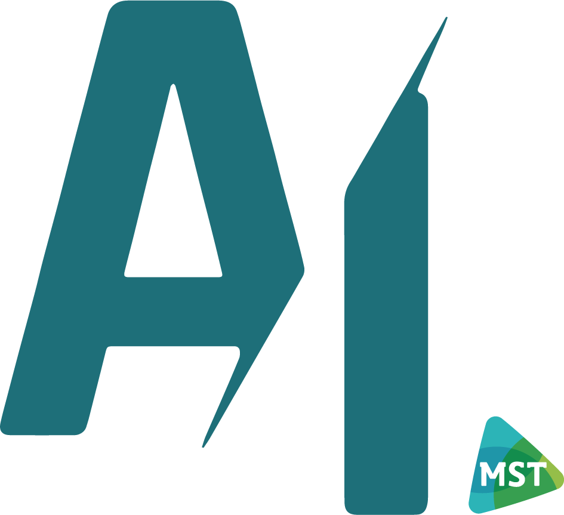

Vraag slimGeef context, opdracht en gewenste vorm.


In MST duikt AI overal op: bij teksten, dossierinformatie, werkprocessen en nieuwe toepassingen. Reis over de plattegrond en ontdek wat een goede prompt nodig heeft, welke informatie veilig is en wanneer AI juist géén goede keuze is. Op vijf afdelingen kom je een herkenbare situatie tegen. Iedere situatie bestaat uit twee korte opdrachten: eerst onderzoek je wat er aan de hand is, daarna pas je de juiste AI-keuze toe. Zo verzamel je stap voor stap de code om de escape game te kraken.

AI Escape Game0 / 50 punten
Je hebt de vijf AI-keuzes afgerond.
MSTAI
Voer deze code in Curio in om het onderdeel af te ronden.
Lees in Zenya de Huisregels en tips – gebruik van generatieve AI in MST of bekijk het AI-beleid van MST.
Heb je een vraag? Mail het AI Lab via ailab@mst.nl.